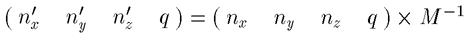
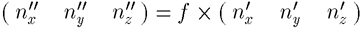
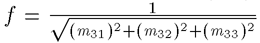
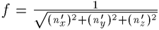

![[Front]](images/OpenGL3.gif)
![[Reference]](../buttons/Reference.gif)
![[Imp. Guide]](../buttons/ImpGuide.gif)
![[Index]](../buttons/Index.gif)
Chapter 5: Programming Hints
![[Prev]](../buttons/ArrowLeft.gif)
![[Next]](../buttons/ArrowRight.gif)
Table of Contents
The topics covered in this chapter are intended to give you some helpful
programming hints as you begin to develop your OpenGL applications. Note that
these hints are specific to HP's implementation of OpenGL. For further
information on OpenGL programming hints that are not HP specific, see Appendix
G in the OpenGL Programming Guide
and section 6.6 "Maximizing OpenGL Performance" in the OpenGL Programming for the X Window
System manual.
The programming hints in this chapter are covered in these sections:
- OpenGL Correctness Hints
- OpenGL Performance Hints
Hints provided in this section are intended to help you correctly use HP's
implementation of OpenGL.
When specifying 4D values, such as vertices, light positions, etc, if possible
supply a w value that is not near the floating point limits of
MINFLOAT or MAXFLOAT. Using w values near the
floating point limits increases the likelihood of floating point precision
errors in calculations such as lighting, transformations, and perspective
division.
Also, performance will be best when 4D positions are normalized such that
w is 1.0.
For best accuracy and performance, if you want to specify some 4D position
like (0.0, 0.0, 5e10, 1.5e38), instead use the equivalent
normalized position (0.0, 0.0, 3.33e-28, 1.0).
If a light position must be specified with a w value that is near the
floating point limits, consider setting
HPOGL_LIGHTING_SPACE=EC
to ensure that lighting occurs in Eye Space. This will eliminate an extra
transformation of the light position, giving the best possible solution.
When using non-orthographic projection, keep in mind the texture coordinates
will be divided by w as an intermediate calculation. HP's
implementation of OpenGL estimates that for VMD, the texture coordinates used
in perspective projections will have only five significant digits of
precision. Therefore, when you have texturing close to a window edge and the
decomposition of the primitive causes the vertices to have very closely-spaced
texture coordinates after perspective projection, you may see loss of
texturing precision. This loss of precision may make the texture primitive
seem locally smeared.
Hints provided in this section are intended to help improve your applications
performance when using HP's implementation of OpenGL.
The topics covered here are areas where you can gain substantial improvements
in program performance when using OpenGL display lists. Here is a list of the
topics that are covered:
- Geometric Primitives
- GL_COMPILE_AND_EXECUTE Mode
- Textures
- State Changes and their Effects on Display Lists
- Regular Primitive Data.
Geometric primitives will typically be faster if put in a display list. As a
general rule, larger primitives will be faster than smaller ones. Performance
gains here can be dramatic. For example, it is possible that a single
GL_TRIANGLES primitive with 20 or so triangles will render three
times faster than 20 GL_TRIANGLES primitives with a single triangle
in each one.
Due to the pre-processing of the display list, and execution performance
enhancements, creating a display list using the
GL_COMPILE_AND_EXECUTE mode will reduce program performance. If you
need to improve your programs performance, do not create a display list using
the GL_COMPILE_AND_EXECUTE mode. You will find that it is easier and
faster to create the display list using the GL_COMPILE mode, and then
execute the list after it is created.
If calls to glTexImage are put into a display list, they may be
cached. Note that if you are going to use the same texture multiple times,
you may gain better performance if you put the texture in a display list.
Another solution would be to use texture objects. Since 3D textures can
potentially become very large, they are not cached.
If there are several state changes in a row, it is possible, in some
circumstances, for the display list to optimize them.
It is more efficient to put a state change before a glBegin, than
after it. For example, this is always more efficient:
glColor3f(1,2,3);
glBegin(GL_TRIANGLES);
glVertex3f(...);
... many more vertices ...
glEnd();
than this:
glBegin(GL_TRIANGLES);
glColor3f(1,2,3);
glVertex3f(...);
... many more vertices ...
glEnd();
If the vertex data that you give to a display list is regular (i.e. every
vertex has the same data associated with it), it is possible for the display
list to optimize the primitive much more effectively than if the data is not
regular.
For example if you wanted to give only a single normal for each face in a
GL_TRIANGLES primitive, the most intuitive way to get the best
performance would look like this:
glBegin(GL_TRIANGLES);
glNormal3fv(&v);
glVertex3fv(&p1); glVertex3fv(&p2); glVertex3fv(&p3);
glNormal3fv(&v);
glVertex3fv(&p1); glVertex3fv(&p2); glVertex3fv(&p3);
...
glEnd();
In immediate mode, this would give you the best performance. However, if you
are putting these calls into a display list, you will get much better
performance by duplicating the normal for each vertex, thereby giving
regular data to the display list:
glBegin(GL_TRIANGLES);
glNormal3fv(&v); glVertex3fv(&p1);
glNormal3fv(&v); glVertex3fv(&p2);
glNormal3fv(&v); glVertex3fv(&p3);
...
glEnd();
The reason this is faster is the display list can optimize this type of
primitive into a single, very efficient structure. The small cost of adding
extra data is offset by this optimization.
This section includes some helpful hints for improving the performance of your
program when downloading textures.
- If you are downloading MIP maps, always begin with the base level (level
0) first.
- If it is possible, you should use texture objects to store and bind
textures.
- If you are doing dynamic downloading of texture maps, you will get better
performance by replacing the current texture with a texture of the same
width, height, border size, and format. This should be done instead of
deleting the old texture and creating a new one.
To increase the performance of selection (glRenderMode GL_SELECTION)
it is recommended that the following capabilities be disabled before entering
the selection mode.
GL_TEXTURE_*
GL_TEXTURE_GEN_*
GL_FOG
GL_LIGHTING
OpenGL state setting commands can be classified into to two different
categories. The first category is vertex-data commands. These are the
calls that can occur between a glBegin/glEnd pair:
glVertex
glColor
glIndex
glNormal
glEdgeFlag
glMaterial
glTexCoord
The processing of these calls is very fast. Restructuring a program to
eliminate some vertex data commands will not significantly improve
performance.
The second category is modal state-setting commands, or sometimes
referred to as "mode changes." These are the commands that:
- Turn on/off capabilities,
- Change attribute settings for capabilities,
- Define lights,
- Change matrices,
- etc.
These calls cannot occur between a glBegin/glEnd pair.
Examples of such commands are:
glEnable(GL_LIGHTING);
glFogf(GL_FOG_MODE, GL_LINEAR);
glLightf(..);
glLoadMatrixf(..);
Changes to the modal state are significantly more expensive to process than
simple vertex-data commands. Also, application performance can be optimized
by grouping modal-state changes, and by minimizing the number of modal-state
changes:
- Grouping your state changes together (that is, several modal state changes
at one time), and then rendering primitives, will provide better
performance than doing the modal state changes one by one and intermixing
them with primitives.
- Grouping primitives that require the same modal state together to minimize
modal state changes. For example, if only part of a scene's primitives
are lighted, draw all the lighted primitives, then turn off lighting and
draw all the unlighted primitives, rather than enabling/disabling lighting
many times.
OpenGL specifies that lighting operations should be done in Eye Coordinate
space. However, if the modelview matrix is isotropic, equivalent lighting
calculations can be performed in Object Coordinate Space, by transforming
stored light positions to Object Coordinates. If there are many vertices
between modelview-matrix changes, Object Coordinate Space lighting is faster
than Eye Coordinate Space lighting since the transformation of vertices and
normals from object to Eye Coordinates can be skipped.
Whether or not Object Coordinate lighting is faster than Eye Coordinate
lighting depends on the command mode (immediate mode vs. execution of a
display list or vertex array) as well as the number of vertices between
modelview-matrix changes.
The selection of a lighting space occurs at the start of the next primitive
(glBegin or vertex array) after any GL calls that could affect the
choice of lighting space. The choice of lighting space can be affected by
those GL calls that:
- Change Object Coordinates to Eye Coordinates (modelview matrix)
- Turn on/off fog
- Turn on/off spherical-texture-coordinate generation.
If the modelview matrix is anisotropic, lighting must be done in Eye
Coordinates. Lighting will also be done in eye coordinates when fogging and
spherical-texture-coordinate generation are done in Eye Coordinates.
If none of the above conditions which force Eye Coordinate Lighting are true,
then HP's implementation of OpenGL chooses the lighting space depending on how
OpenGL commands are being executed at the time a choice must be made. If
commands are being executed in immediate mode, Eye Space Lighting is chosen.
If commands are being executed from a display list or if a vertex array is
being executed, object space lighting is chosen.
Eye Space Lighting works well when commands are executed in immediate mode,
and Object Space Lighting works well when:
- There are many (8 or more) vertices between changes to light definitions
or to the modelview matrix.
- A display list or vertex array is used.
You can override the above lighting space selection rules by setting the
environment variable HPOGL_LIGHTING_SPACE. To set this environment
variable, execute the following command:
export HPOGL_LIGHTING_SPACE=EC
when any of the following are true:
- The application uses display lists or vertex arrays, but makes frequent
changes to the modelview matrix or to light definitions (using
glLight()).
- The application uses display lists or vertex arrays, but frequently turns
fogging or spherical-texture-coordinate generation on/off.
- The application uses 4D data (for example, vertices, light positions) and
the w values are near the floating-point limits. See the section
above on 4D values for more information.
It is appropriate to use
export HPOGL_LIGHTING_SPACE=OC
when:
- There are many (eight or more) vertices between light changes or
modelview-matrix changes.
- Display lists or vertex arrays are used extensively.
and any of the following are true:
When tuning an application, first use just the default-lighting-space
selection (do not set HPOGL_LIGHTING_SPACE). If the application
matches the conditions listed above that indicate the need for setting
HPOGL_LIGHTING_SPACE, then experiment with setting the environment
variable.
HP's implementation of OpenGL optimizes the lighting case such that the
performance degradation from one light to two or more lights is linear.
Lighting performance does not degrade noticeably when you enable a second
light. In addition, the GL_SHININESS material parameter is not
particularly expensive to change.
The proper use of HP's occlusion culling extension can dramatically improve
rendering performance. This extension defines a mechanism for determining the
non-visibility of complex geometry based on the non-visibility of a bounding
geometry. This feature can greatly reduce the amount of geometry processing
and rendering required by an application, thereby, increasing the applications
performance. For more information on occlusion culling, see the section "Occlusion
Extension" found in Chapter 1.
When normal rescaling is enabled, a new operation is added to the
transformation of the normal vector into eye coordinates. The normal vector
is rescaled after it is multiplied by the inverse modelview matrix and before
it is normalized.
The rescale factor is chosen so that in many cases, normal vectors with unit
length in object coordinates will not need to be normalized as they are
transformed into eye coordinates.
As of Release 1.05 of HP's implementation of OpenGL 1.1, the
GL_RESCALE_NORMAL_EXT token is supported. It is accepted by the
 cap
cap parameter of glEnable, glDisable, and glIsEnabled, and by the pname parameter of glGetBooleanv, glGetIntegerv, glGetFloatv, and glGetDoublev.
parameter of glEnable, glDisable, and glIsEnabled, and by the pname parameter of glGetBooleanv, glGetIntegerv, glGetFloatv, and glGetDoublev.
Normals that have unit length when sent to the GL, have their length changed
by the inverse of the scaling factor after transformation by the model-view
inverse matrix when the model-view matrix represents a uniform scale. If
rescaling is enabled, then normals specified with the Normal command are
rescaled after transformation by the ModelView Inverse.
Normals sent to the GL may or may not have unit length. In addition, the
length of the normals after transformation might be altered due to
transformation by the model-view inverse matrix. If normalization is enabled,
then normals specified with the glNormal3 command are normalized after
transformation by the model-view inverse matrix and after rescaling if
rescaling is enabled. Normalization and rescaling are controlled with glEnable and glDisable with the target equal to
NORMALIZE or RESCALE_NORMAL. This requires two bits of
state. The initial state is for normals not to be normalized or rescaled.
Therefore, if the modelview matrix is M, the transformed plane equation is:

the rescaled normal is

and the fully transformed normal is
If rescaling is disabled, f is 1, otherwise f is computed as
follows:
Let mij denote the matrix element in row i and column
j of M-1, numbering the topmost row of the matrix as
row 1, and the leftmost column as column 1. Then

Alternatively, an implementation my chose to normalize the normal instead of
rescaling the normal. Then

If normalization is disabled, then the square root in equation 2.1 is replaced
with 1; otherwise, it is calculated as dictated by the OpenGL Spec. If both
normalize and rescale are enabled, HP's implementation skips the rescale and
does only the normalize.
![[Up]](../buttons/ArrowUp.gif)